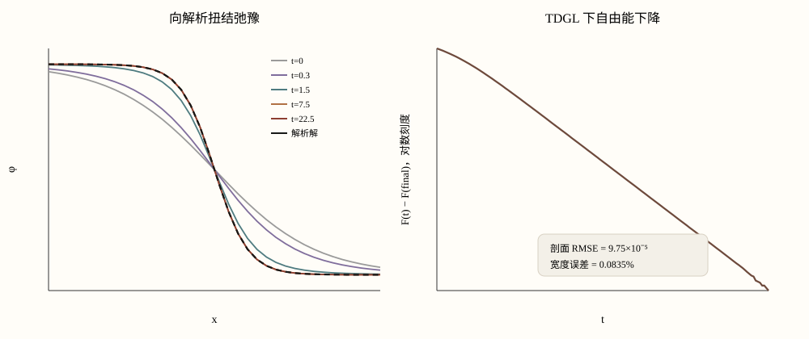

先别复现整篇论文：先证明你的 TDGL 真的会长出“正确的墙”
主论文：Caballero et al., PRB 102, 104204 (2020)。这节不直接挑战作者的大尺寸二维 GL ↔ elastic-line model（弹性线模型）结果，而先抽出一个可解析、普通 CPU 很快就能验收的已知答案测试：数值 domain wall（畴壁）必须收敛到论文 Eq. (7–8) 的 tanh kink（双曲正切扭结）。
剖面 RMSE、畴壁宽度、自由能下降三关都过，才允许进入二维畴壁。
0 · 这节到底复现论文的哪一块？
Caballero 的体场层面使用非守恒标量 order parameter（序参量） φ(r,t)、双井 φ⁴ 势和 overdamped Langevin（过阻尼朗之万）/ Model A（A 型模型）动力学；无序为零时，stationary soliton（定态孤子）给出一堵解析可知的畴壁。项目权威来源是 Drive 中的 Caballero et al. 2020 PDF；期刊版本：PRB 102, 104204。
1 · 为什么故意从一堵错误的畴壁开始？
不能直接初始化答案
如果一开始就填解析 tanh，代码“不动”并不能证明积分器正确。
故意设成 3w
初始畴壁比平衡畴壁宽三倍，强迫 TDGL 真正发生弛豫。
看它自己回去
正确代码应把畴壁收缩到 w，同时自由能下降。
2 · 从方程到代码，只看四步
一维 x 网格；无序为零、无热噪声。
中心差分 ∂²φ/∂x²。
显式 Euler（欧拉）更新 γ∇²φ+αφ−δφ³。
左右固定为 +φ₀ / −φ₀，保证存在单墙。
lap = (phi[2:] - 2*phi[1:-1] + phi[:-2]) / dx**2 rhs = (gamma*lap + alpha*phi[1:-1] - delta*phi[1:-1]**3) / eta phi[1:-1] += dt * rhs phi[0], phi[-1] = +phi0, -phi0
alpha*phi-delta*phi**3 来自 -V'(phi)；将来 sliding ferroelectricity（滑移铁电）的周期势、RF、RB 也应该从自由能一项项求导，而不是凭感觉往更新式里塞力。3 · 硬性验收条件怎么写？
设 α=δ=γ=η=1，则 φ₀=1、wexact=√2=1.414214。数值结果用两个独立量验证：
assert rmse < 5e-4 assert width_error < 5e-3
4 · 我实际跑出的结果

| 检查 | 要求 | 实际结果 | 状态 |
|---|---|---|---|
| 畴壁宽度 | 1.414214 | 1.415395；误差 0.0835% | 通过 |
| 剖面 RMSE | <5×10−4 | 9.75×10−5 | 通过 |
| 自由能 | 弛豫过程中应下降 | F(t)−F(final) → 0 | 通过 |
5 · 和你的滑移铁电项目怎么接？
| 本课对象 | 你的项目对应 | 下一步 |
|---|---|---|
| φ⁴ 势 | 周期堆垛 / 极化有效势 | 换成滑移铁电特定能量景观 |
| 无序为零的单畴壁 | 单畴壁初始化 / E=0 弛豫 | 做真正的畴壁稳定性验证 |
| 畴壁宽度 | 网格分辨率合理性检查 | 确认 dx 能分辨畴壁，避免伪退钉扎 |
| TDGL 更新 | phase-field（相场）时间演化 | 再加恒定 E、淬火 RF/RB、热噪声 |
| 硬性回归测试 | 求解器改动后的最低验收 | 已知答案测试通过后才跑阈值批量扫描 |
6 · 出错时你应该先查什么？
| 症状 | 先查 | 别先怪 |
|---|---|---|
| NaN / 振荡 | dt 与显式扩散稳定性 | 理论不适用 |
| 畴壁宽度偏差很大 | dx、边界距离、拉普拉斯算子离散 | 随机种子——本课没有随机项 |
| 畴壁消失 | 左右边界是否锁住两个相 | 退钉扎 |
| F 不降 | 积分器 / 能量实现 | 热激活——本课 T=0 |
7 · 完整脚本
打开完整 Python 脚本 → 依赖只有 NumPy + Matplotlib。脚本会自己打印畴壁宽度 / RMSE，并在不达标时直接触发 assert（断言）失败。
dx = 0.1000 dt = 0.001500 analytic width = 1.414214 numerical width = 1.415395 relative w error = 0.0835% profile RMSE = 9.754e-05
8 · 第 02 课已上线：二维体场 → u(y) → B(r)
把 φ(x) 扩成 φ(x,y)。
从 diffuse field（弥散场）中找畴壁位置。
平直畴壁应有 B(r)≈0。
开始复现 Caballero 在无序为零时的粗糙度增长。